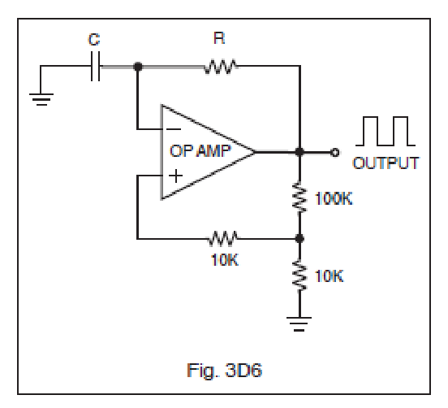
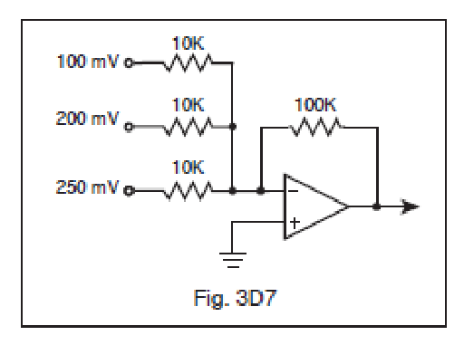
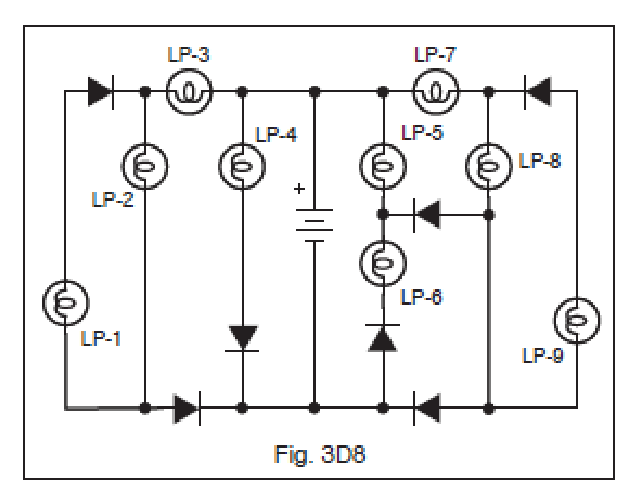
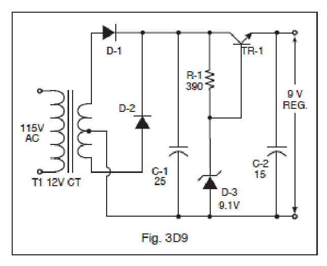
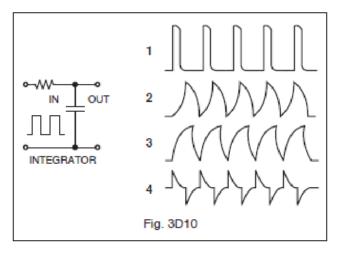
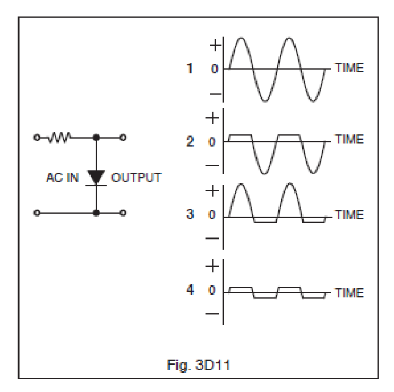

All 24 FCC GROL questions for 3D Circuits with the correct answers marked, from the official current FCC question pool. Test yourself with the free practice exam.
3-29D1
What is the approximate magnitude of the impedance of a parallel R-L-C circuit at resonance?
A. Approximately equal to the circuit resistance. ✓
B. Approximately equal to XL.
C. Low, as compared to the circuit resistance.
D. Approximately equal to XC.
3-29D2
What is the approximate magnitude of the impedance of a series R-L-C circuit at resonance?
A. High, as compared to the circuit resistance.
B. Approximately equal to the circuit resistance. ✓
C. Approximately equal to XL.
D. Approximately equal to XC.
3-29D3
How could voltage be greater across reactances in series than the applied voltage?
A. Resistance.
B. Conductance.
C. Capacitance.
D. Resonance. ✓
3-29D4
What is the characteristic of the current flow in a series R-L-C circuit at resonance?
A. Maximum. ✓
B. Minimum.
C. DC.
D. Zero.
3-29D5
What is the characteristic of the current flow within the parallel elements in a parallel R-L-C circuit at resonance?
A. Minimum.
B. Maximum. ✓
C. DC.
D. Zero.
3-29D6
What is the relationship between current through a resonant circuit and the voltage across the circuit?
A. The current and voltage are 180 degrees out of phase.
B. The current leads the voltage by 90 degrees.
C. The voltage and current are in phase. ✓
D. The voltage leads the current by 90 degrees.
3-30D1
What is the main advantage of using an op-amp audio filter over a passive LC audio filter?
A. Op-amps are largely immune to vibration and temperature change.
B. Most LC filter manufacturers have retooled to make op-amp filters.
C. Op-amps are readily available in a wide variety of operational voltages and frequency ranges.
D. Op-amps exhibit gain rather than insertion loss. ✓
3-30D2
What are the characteristics of an inverting operational amplifier (op-amp) circuit?
A. It has input and output signals in phase.
B. Input and output signals are 90 degrees out of phase.
C. It has input and output signals 180 degrees out of phase. ✓
D. Input impedance is low while the output impedance is high.
3-30D3
Gain of a closed-loop op-amp circuit is determined by?
A. The maximum operating frequency divided by the square root of the load impedance.
B. The op-amp’s external feedback network. ✓
C. Supply voltage and slew rate.
D. The op-amp’s internal feedback network.
3-30D4
Where is the external feedback network connected to control the gain of a closed-loop op-amp circuit?
A. Between the differential inputs.
B. From output to the non-inverting input.
C. From output to the inverting input. ✓
D. Between the output and the differential inputs.
3-30D5
Which of the following op-amp circuits is operated open-loop?
A. Non-inverting amp.
B. Inverting amp.
C. Active filter.
D. Comparator. ✓
3-30D6
In the op-amp oscillator circuit shown in Figure 3D6, what would be the most noticeable effect if the capacitance of C were suddenly doubled?

A. Frequency would be lower. ✓
B. Frequency would be higher.
C. There would be no change. The inputs are reversed, therefore the circuit cannot function.
D. None of the above.
3-31D1
What frequency synthesizer circuit uses a phase comparator, look-up table, digital-to-analog converter, and a low-pass antialias filter?
A. A direct digital synthesizer. ✓
B. Phase-locked-loop synthesizer.
C. A diode-switching matrix synthesizer.
D. A hybrid synthesizer.
3-31D2
A circuit that compares the output of a voltage-controlled oscillator (VCO) to a frequency standard and produces an error voltage that is then used to adjust the capacitance of a varactor diode used to control frequency in that same VCO is called what?
A. Doubly balanced mixer.
B. Phase-locked loop. ✓
C. Differential voltage amplifier.
D. Variable frequency oscillator.
3-31D3
RF input to a mixer is 200 MHz and the local oscillator frequency is 150 MHz. What output would you expect to see at the IF output prior to any filtering?
A. 50, 150, 200 and 350 MHz. ✓
B. 50 MHz.
C. 350 MHz.
D. 50 and 350 MHz.
3-31D4
What spectral impurity components might be generated by a phase-locked-loop synthesizer?
A. Spurs at discrete frequencies.
B. Random spurs which gradually drift up in frequency.
C. Broadband noise. ✓
D. Digital conversion noise.
3-31D5
In a direct digital synthesizer, what are the unwanted components on its output?
A. Broadband noise.
B. Spurs at discrete frequencies. ✓
C. Digital conversion noise.
D. Nyquist limit noise pulses.
3-31D6
What is the definition of a phase-locked loop (PLL) circuit?
A. A servo loop consisting of a ratio detector, reactance modulator, and voltage-controlled oscillator.
B. A circuit also known as a monostable multivibrator.
C. A circuit consisting of a precision push-pull amplifier with a differential input.
D. A servo loop consisting of a phase detector, a low-pass filter and voltage-controlled oscillator. ✓
3-32D1
Given the combined DC input voltages, what would the output voltage be in the circuit shown in Figure 3D7?

A. 150 mV
B. 5.5 V
C. -15 mv
D. -5.5 V ✓
3-32D2
Which lamps would be lit in the circuit shown in Figure 3D8?

A. 2, 3, 4, 5 and 6.
B. 5, 6, 8 and 9.
C. 2, 3, 4, 7 and 8. ✓
D. 1, 3, 5, 7 and 8.
3-32D3
What will occur if an amplifier input signal coupling capacitor fails open?
A. No amplification will occur, with DC within the circuit measuring normal. ✓
B. Improper biasing will occur within the amplifier stage.
C. Oscillation and thermal runaway may occur.
D. An AC hum will appear on the circuit output.
3-32D4
In Figure 3D9, determine if there is a problem with this regulated power supply and identify the problem.

A. R1 value is too low which would cause excessive base current and instantly destroy TR 1.
B. D1 and D2 are reversed. The power supply simply would not function.
C. TR1 is shown as an NPN and must be changed to a PNP.
D. There is no problem with the circuit. ✓
3-32D5
In Figure 3D10 with a square wave input what would be the output?

A. 1
B. 2
C. 3 ✓
D. 4
3-32D6
With a pure AC signal input to the circuit shown in Figure 3D11, what output wave form would you expect to see on an oscilloscope display?

A. 1
B. 2 ✓
C. 3
D. 4